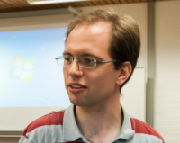
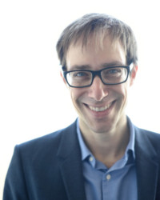
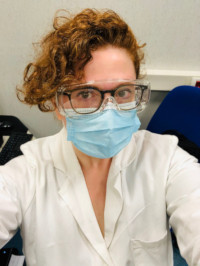
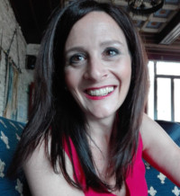
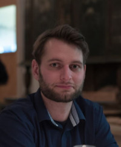
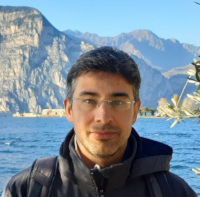
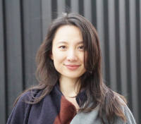

People involved in EEGManyPipelines
Steering committee
Members of the steering committee are responsible for the overall management of the
project, including data collection, analysis, and dissemination. They also coordinate
the efforts of the participating analyst teams.
The steering committee consists of the following members (in alphabetical order):
The steering committee consists of the following members (in alphabetical order):
Algermissen, Johannes [Homepage]

Donders Institute for Brain, Cognition, and Behavior, Radboud University Nijmegen
Netherlands
I am a PhD candidate at the Donders Institute in Nijmegen, the
Netherlands. I use (simultaneous) EEG and fMRI, eye-gaze, and
pupillometry combined with computational modeling of behavior to study
reinforcement learning and decision-making. I am particularly interested
in motivational biases, i.e. the prospect of rewards or punishments
invigorating or suppressing behavior.
Busch, Niko [Homepage]

Institute of Psychology, University of Münster
Germany
I am a professor for experimental psychology at the University of
Münster. I use EEG, eye tracking, and psychophysics to study visual
cognition. For more information, go to
http://go.wwu.de/xgfs6.
Institute of Psychology, University of Münster
Germany
I'm a postdoc at the Institute of Psychology, University of Münster,
focusing on reproducibility of EEG research and an impact different
analysis parameters have to the observed result. I’m primarily working
on the EEGManyPipelines project. My previous research experience and
interests extend to spontaneous neural oscillations and their role in
attention modulation.
National University of Singapore (NUS)
Singapore
I am a postdoc at National University of Singapore (NUS), where I
presently work with EEG correlates of prosocial behaviours (e.g.
fairness perception and theory of mind skills) in preschoolers. During
my PhD, I investigated the EEG features linked with propagating
information through social media. Therefore, my main research interests
are (but not restricted to) investigating how people process and
perceive social information and how this can affect their behaviours in
real-world. When I am not working, I like to explore different cuisines,
meet some friends and watch Netflix series.
Gianelli, Claudia

Department of Clinical and Experimental Medicine, University of Messina
Italy
I am an Associate Professor at the University of Messina. I use
brain stimulation, EEG, kinematics and behavioral measures - often in
combination - to investigate motor cognition in healthy participants and
clinical populations (e.g. patients with movement disorders).
Wellcome Centre for Integrative Neuroimaging, University of Oxford
UK
I'm an assistant professor in Multimodal Neuroimaging at the Centre for Human Brain Health, University of Birmingham.
I'm mainly interested in understanding the ways transcranial brain stimulation - using magnetic fields, electric
currents, and ultrasound - change brain network activity, in order to make them more effective translational tools for
treating disorders and improving brain health. I use a combination of EEG, MEG, OPM, brain stimulation and computational
modelling. I'm also interested in how we can improve the ways we do and think about cognitive neuroscience.
Department of Clinical Neuroscience, Karolinska Institutet
Sweden
I am a researcher in neuroscience and metascience. I have worked for
many years with brain imaging methods including MRI and EEG to study
e.g. sleep and diurnal rhythms. I also take a strong interest in
research transparency and reproducibility, and have been involved in
numerous projects to examine replicability and reproducibility.
Pascarella, Annalisa [Homepage][Linkedin]

Institute for Applied Mathematics Mauro Picone, National Research Council, Roma
Italy
I am a Senior Researcher at the Institute of Applied Mathematics “M. Picone” (IAC),
CNR in Rome, Italy. My research interests concern the development of advanced computational
methods for estimating neural time series from MEG/EEG data, with particular emphasis on
Bayesian approaches. I contributed to the development of several open-source packages,
including Neuropycon, an open-source Python-based pipeline for advanced multi-threaded
processing of fMRI and M/EEG data. My current work focuses on the characterization of
brain dynamics from M/EEG measurements during various meditation practices, combining complexity-
and criticality-related measures with machine learning techniques.
Research Group Neural Circuits, Consciousness and Cognition, Max Planck Institute for Empirical Aesthetics
Germany
I am currently an MSCA fellow with Lucia Melloni at the MPI for
Empirical Aesthetics. As a cognitive neuroscientist, I try to understand
how the human brain generates and stores subjective experiences. To this end,
I employ a mixture of behavioral techniques and electrophysiological methods (i.e., EEG/MEG),
as well as machine learning algorithms. When I am not in the lab, I enjoy spending
time with my kids, cooking (and eating) dishes from different cultures
and cuisines, listening to and playing music (either on my recorder or
my guitar), and traveling to (foreign) cities and countries.
Vinding, Mikkel C. [Homepage]

Department of Psychology, University of Copenhagen, Copenhagen
NatMEG, Department of Clinical Neuroscience, Karolinska Institutet, Stockholm
Denmark
I work with computational modeling of hierarchical intentions at the Department of Psychology at the University of Copenhagen, and I am
an affiliated researcher at The National Facility for Magnetoencephalography (NatMEG) at Karolinska Institutet. I regularly teach courses on EEG and related methods. My main
research is on motor control and functional correlates of neurodegenerative diseases involving M/EEG.
Vitale, Andrea [Twitter]

Child Psychopathology Department, Scientific
Institute IRCCS Eugenio Medea; Laboratory for Autism and
Neurodevelopmental Disorders, Istituto Italiano di Tecnologia
Italy
I am a second-year postdoctoral fellow. Currently my research
investigates the impact of neural oscillatory states on low-level
sensory information processing and their potential cascade effects in
developmental disorders. For this purpose I use EEG (and eye-tracking)
and I am interested in a mixture of source localization and decoding
analysis.
Yang, Yu-Fang [Twitter]

Freie Universität Berlin, Department of Education and Psychology, Division General Psychology and Neuropsychology
Germany
I am a postdoctoral fellow at the University of Würzburg. I use EEG,
eye-tracking, and psychophysics to investigate the face perception,
visual processing, and emotions both in healthy subjects and patients
with disorders in socioemotional processing, such as patients with
schizophrenia. Furthermore, I combine EEG measure with computational
modelling of behaviour to study decision making in face processing.
Former steering committee members
Former members of the EEGManyPipelines steering committee (in alphabetical order):
Department of Psychology, University of Notre Dame
USA
King's College London and New Zealand College of Chiropractic
UK
Faculty of Information Technology, University of Jyväskylä
Finland
Department of Experimental Psychology, Ghent University
Belgium
Department of Language Science, University of California, Irvine
USA
Analysts
The analysts all analysed the same EEG data set and provided their results, analysis scripts,
and detailed questionnaire data about their analyses. The analysts are (in alphabetical order):
- Abbasi, Omid
- Adamovich, Timofey
- Adel, Lena
- Agarwal, Nikita
- Aguado-López, Blanca
- Ajmeria, Uma
- Al, Esra
- Aldeen, Hannah
- Alejandro, Ricardo J.
- Alenina, Evgeniia A.
- Alex, Meera
- Ambrosini, Ettore
- Angus, Douglas J.
- Anzolin, Alessandra
- Appelhoff, Stefan
- Arcara, Giorgio
- Arkhipova, Yana
- Azanova, Maria
- Bagattini, Chiara
- Baker, Daniel H.
- Bamberg, Christoph
- Barbero, Francesca M.
- Battal, Ceren
- Bauer, Anna-Katharina R.
- Bayram, Burcu
- Bazán, Paulo R.
- Beale, Henry
- Belanova, Elena
- Bergström, Zara M.
- Bernardi, Giulio
- Berto, Martina
- Betta, Monica
- Blanchette, Isabelle
- Bortoletto, Marta
- Bottari, Davide
- Braboszcz, Claire
- Bradford, Daniel E.
- Brooks, Joseph L.
- Brunskill, Chloe M.
- Bublatzky, Florian
- Büchel, Daniel
- Calce, Roberta P.
- Capizzi, Mariagrazia
- Cassani, Raymundo
- Castellanos, María Concepción
- Cattaneo, Luigi
- Cerda-Company, Xim
- Chen, Lixiang
- Chen, Xinyuan
- Chen, Yiyu
- Choo, Yoojeong
- Chuan-Peng, Hu
- Chugani, Karan
- Cichy, Radoslaw Martin
- Cimrová, Barbora
- Ciranka, Simon
- Civier, Oren
- Cogoni, Carlotta
- Coll, Michel-Pierre
- Coloigner, Julie
- Conejero, Angela
- Constant, Martin
- Corona-González, César E.
- Criscuolo, Antonio
- Cruse, Damian
- Cury, Claire
- Czeszumski, Artur
- Dahl, Martin J.
- Davidson, Matthew
- de Vries, Ingmar E. J.
- del Castillo, M. Dolores
- DeLuca, Vincent
- Demarchi, Gianpaolo
- Desender, Kobe
- Dias, Marcelo
- Dietz, Martin
- Dimigen, Olaf
- Ding, Hao
- Dong, Li
- Drijvers, Linda
- Drisdelle, Brandi Lee
- Duma, Gian Marco
- Dumas, Guillaume
- Ehinger, Benedikt
- Emmendorfer, Alexandra K.
- Enge, Alexander
- Evas, Stefanie
- Fedele, Tommaso
- Federici, Alessandra
- Feld, Gordon B.
- Fink, Lauren K.
- Fischer, Shai
- Fló, Emilia
- Formica, Silvia
- Forschack, Norman
- Forster, Bettina
- Franz, Marcel
- Franzen, Léon
- Fry, Cassidy M.
- Galvez-Pol, Alejandro
- García Alanis, José Carlos
- García-Lázaro, Haydee G.
- Garrido-Vásquez, Patricia
- Gerdfeldter, Billy
- Gerike, Georgia
- Gippert, Magdalena
- González-García, Carlos
- Gordillo, Dario
- Grabowska, Anna
- Greenwood, Lisa-Marie
- Griffiths, Benjamin J.
- Grollero, Demetrio
- Gross, Joachim
- Gubler, Danièle A.
- Guilleminot, Pierre
- Güler, Berna
- Gundlach, Christopher
- Günseli, Eren
- Guo, Mingqian
- Güth, Malte R.
- Haciahmet, Céline
- Hadas, Itay
- Hämäläinen, Jarmo
- Han, Sizhu
- Harris, Anthony M.
- Hassan, Mahmoud
- Haufe, Stefan
- Heinsfeld, Anibal S.
- Herholz, Peer
- Hervault, Mario
- Hill, Aron T.
- Hodapp, Alice
- Hommelsen, Maximilian
- Honcamp, Hanna
- Hosang, Thomas J.
- Hsu, Chun-Hsien
- Hsu, Tzu-Yu
- Huang, Changrun
- Huber-Huber, Christoph
- Hughes, Matthew
- Ibanez, Agustin
- Iravani, Behzad
- Isenburg, Kylie
- Jack, Bradley N.
- Jamshidi Idaji, Mina
- Jefsen, Oskar H.
- Jeong, El
- Jiang, Fang
- Joechner, Ann-Kathrin
- Johnson, Matthew R.
- Jung, Ki-Young
- Kaboodvand, Neda
- Kaiser, Daniel
- Kałamała, Patrycja
- Kang, Taeho
- Kapralov, Nikolai
- Karimi-Rouzbahani, Hamid
- Kegler, Mikolaj
- Kelley, Nicholas J.
- Kern, Simon
- Kerrén, Casper
- Kim, Songhee
- Kiseleva, Alina
- Klatt, Laura-Isabelle
- Klotzsche, Felix
- Kluger, Daniel S.
- König, Peter
- Kopp, Bruno
- Kosciessa, Julian Q.
- Kosilo, Maciej
- Kotchoubey, Boris
- Kouara, Layla
- Krewinkel, Sander
- Kroczek, Leon O. H.
- Kührt, Corinna
- Lago, Sara
- Lamoš, Martin
- Langer, Nicolas
- Lazurenko, Dmitry
- Le Denmat, Pierre
- Lees, Ty
- Lehmann, Tim
- Lenc, Tomas
- Lenoir, Cédric
- Li, Wanru
- Li, Zefeng
- Liesefeld, Anna M.
- Liesefeld, Heinrich R.
- Likhanov, Maxim
- Lintz, Evan N.
- Lioi, Giulia
- Litvak, Vladimir
- Liu, Xiaoyi
- Liu, Yikang
- Lo, Yu-Hui
- López-Caneda, Eduardo
- López-García, David
- Lorenz, Corinna
- Löw, Andreas
- Lu, Runhao
- Lu, Zitong
- Luque, Alicia
- Lydon-Staley, David
- MacGregor, Oskar
- Maffei, Antonio
- Maier, Martin E.
- Makowski, Lisa M.
- Mantegna, Francesco
- Marcantoni, Eleonora
- Martín-Buro, María Carmen
- Martinovici, Ana
- Marzecova, Anna
- Masina, Fabio
- Mattingley, Jason B.
- Mazzini, Sara
- Medani, Takfarinas
- Mei, Ting
- Melcher, David
- Meng, Qingqing
- Menger, Nick S.
- Mheich, Ahmad
- Mitka, Milan
- Monroy, Claire
- Montefinese, Maria
- Moreau, David
- Moreau, Quentin
- Mudrik, Liad
- Mushtaq, Faisal
- Myers, Nicholas E.
- Naal-Ruiz, Norberto E.
- Najafi, Foroogh
- Ngo, Hong-Viet V.
- Nie, Lu
- Nilsson, Martin
- Niso, Guiomar
- Nyhus, Erika
- Oerlemans, Joyce
- Olivetti, Emanuele
- Orpella, Joan
- Ort, Eduard
- Palenciano, Ana F.
- Park, Kyoungeun
- Pastötter, Bernhard
- Patai, Zita
- Paul, Katharina
- Paulo, Artur José M.
- Pellegrino, Giovanni
- Pereira Soares, Sergio M.
- Pestilli, Franco
- Pezzetta, Rachele
- Pfabigan, Daniela M.
- Plachti, Anna
- Pomper, Ulrich
- Popov, Tzvetan
- Prado, Pavel
- Protzner, Andrea B.
- Prystauka, Yanina
- Qian, Haoyue
- Rabovsky, Milena
- Ramos da Cruz, Janir
- Rausch, Manuel
- Rawal, Amit
- Repplinger, Stefan
- Rice, Danielle R.
- Riecansky, Igor
- Riha, Pavel
- Rodrigues, Johannes
- Roncaglia, M. Paula
- Rose, Michael
- Rösner, Marlene
- Rothman, Jason
- Ruch, Simon
- Ruhnau, Philipp
- Sarig Golan, Adi
- Sarkar, Arkaprovo
- Satish, Akul
- Scarpazza, Cristina
- Scheffel, Christoph
- Schepers, Judith
- Schettino, Antonio
- Schmidt, Barbara
- Schmidt, Fabian
- Schubert, Anna-Lena
- Schuler, Anna-Lisa
- Scrivener, Catriona L.
- Senderecka, Magdalena
- Senftleben, Ulrike
- Serin, Fatih
- Serrano, J. Ignacio
- Shabanpour, Mehran
- Shamova, Veronika
- Shareef, Idris
- Sherbina, Dmitry
- Short, Cassie Ann
- Signoret, Carine
- Sirius, Esaú V. P.
- Skukies, René
- Soria-Frisch, Aureli
- Soylu, Firat
- Speer, Sebastian
- Steinfath, Tim Paul
- Steinhauser, Robert
- Steinkamp, Simon R.
- Stephani, Tilman
- Strobel, Alexander
- Strzelczyk, Dawid
- Sun, Pheobe
- Sun, Yanan
- Surrey, Caroline
- Syrov, Nikolay
- Tagliaferri, Marco
- Talwar, Siddharth
- Tarantino, Vincenza
- Tavano, Alessandro
- Taylor, Jason R.
- Thiele, Carsten
- Thirugnanasambandam, Nivethida
- Todorova, Lara
- Tomić, Aleksandra
- Troche, Stefan J.
- Tseng, Lin-Yuan
- Tune, Sarah
- Turan, Gözem
- Turella, Luca
- Ulloa, José Luis
- Valiadis, Michael
- Vallesi, Antonino
- van der Wijk, Gwen
- van Vliet, Marijn
- van Wingerden, Marijn
- Varano, Enrico
- Varma, Mohith M.
- Vasconcelos, Margarida
- Vergilova, Yoana
- Vilà-Balló, Adrià
- Visalli, Antonino
- Viviani, Giada
- Vloeberghs, Robin
- Wacker, Jan
- Waller, Darcy
- Wang, Meng-Yun
- Wang, Tianlu
- Wang, Ya-Jie
- Wei, Duan
- Werkle-Bergner, Markus
- White, David
- Whitton, Simon
- Wiebels, Kristina
- Wiens, Stefan
- Wittkamp, Christoph A.
- Wolf, Maren-Isabel
- Wong-Kee-You, Audrey
- Woods, Will
- Wurm, Franz
- Wynn, Syanah C.
- Xie, Jiushu
- Xifra-Porxas, Alba
- Xu, Weiyong
- Yakovlev, Lev
- Yang, Jinbiao
- Yavuz, Mustafa
- Youssofzadeh, Vahab
- Yu, Rongjun
- Zafar, Talha
- Zago, Sara
- Zakharov, Ilya
- Zakrzewska, Marta Z.
- Zhang, Juanli
- Zhang, Zhen
- Zhen, Shanshan
- Zhou, Xinqi
- Zhu, Judy D.
- Zhu, Siyu
- Zhuang, Qian
- Zich, Catharina
- Zomorrodi, Reza
- Zugarramurdi, Camila
Advisory board
- Balazs Aczel, ELTE, Eotvos Lorand University, Budapest, Hungary
- Mike X. Cohen, Radboud University Medical Center, Donders Centre for Medical Neuroscience, the Netherlands
- Arnaud Delorme, Centre de recherche Cerveau et Cognition, Paul Sabatier University, Toulouse, France
- Anna Dreber, Stockholm School of Economics, Stockholm, Sweden
- Jörg Hipp, Roche Pharma Research and Early Development, Neuroscience and Rare Diseases, Roche Innovation Center Basel, F. Hoffmann–La Roche Ltd., Basel, Switzerland.
- Felix Holzmeister, Department of Economics, University of Innsbruck, Innsbruck, Austria
- Magnus Johannesson, Stockholm School of Economics, Stockholm, Sweden
- Vanja Ković, Department of Psychology, Faculty of Philosophy, University of Belgrade, Belgrade, Serbia
- Robert Oostenveld, Donders Institute for Brain, Cognition and Behaviour, Radboud University, Nijmegen, the Netherlands
- Cyril Pernet, Neurobiology Research Unit, Copenhagen University Hospital, Rigshospitalet, Copenhagen, Denmark
- Russell Poldrack, Department of Psychology, Stanford University, Stanford, USA
- Aina Puce, Department of Psychological & Brain Sciences, Indiana University, Bloomington, USA
- Tom Schonberg, Tel Aviv University, Tel Aviv, Israel
- Martin Schweinsberg, ESMT Berlin, Berlin, Germany
- Anđela Šoškić, Faculty of Philosophy, Laboratory for Neurocognition and Applied Cognition, University of Belgrade, Belgrade, Serbia
- Barnabas Szaszi, ELTE, Eotvos Lorand University, Budapest, Hungary
- Eric L. Uhlmann, Department of Organizational Behavior, INSEAD, Singapore